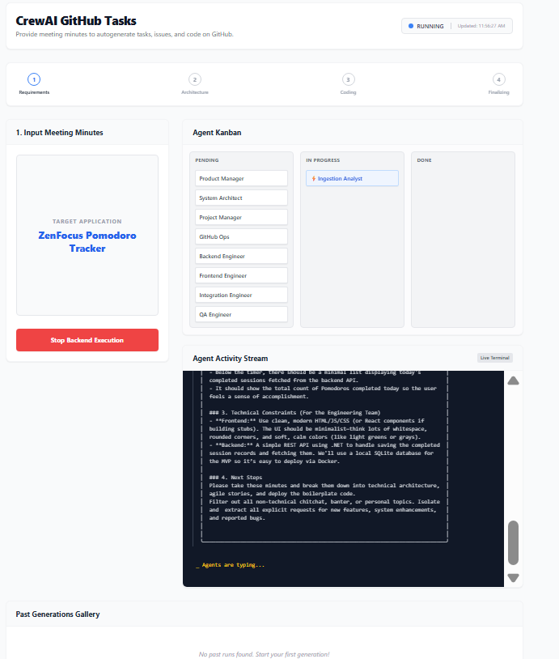
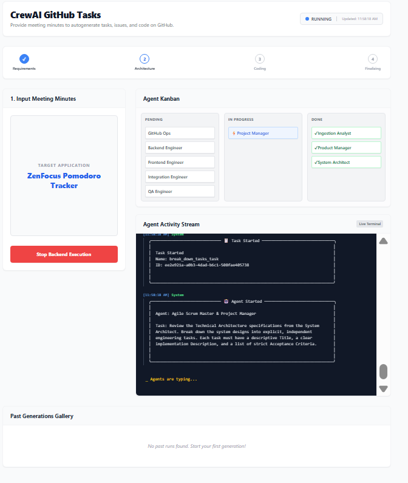
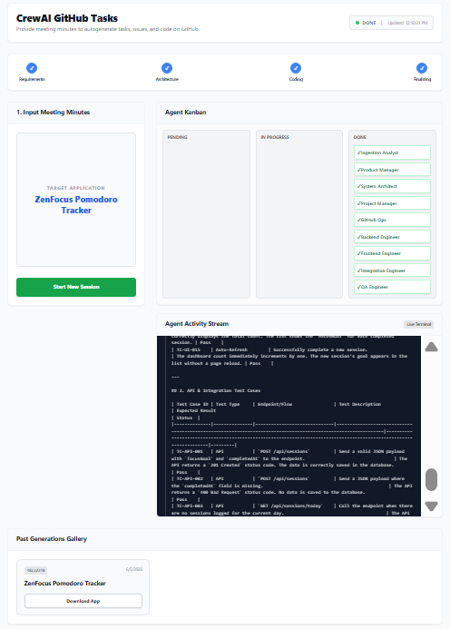

Multi-Agent GitHub Orchestration Crew
An AI-driven project management assistant that autonomously translates meeting minutes into GitHub Issues, updates project boards, and drafts initial feature code.

Problem & Target Users
Target Users: Agile software development teams utilizing GitHub Projects and Issues, primarily Product Managers, Scrum Masters, and Software Engineers.
The Problem: Software teams lose critical time manually translating meeting minutes into structured GitHub Issues, maintaining project boards, and tracking the alignment between defined stories and actual development work. This administrative overhead slows down actual software delivery.
Solution Overview
A multi-agent application utilizing CrewAI that seamlessly integrates with GitHub. The system processes unstructured meeting minutes to autonomously extract actionable tasks, create issues, and manage states in GitHub project boards. Furthermore, a specialized Developer Agent writes initial feature code based on these issues, while a Reporting UI provides a real-time, human-readable audit trail of all agent activities.
By bridging the gap between project management administration and software development, this tool transforms passive meeting transcripts into active, implemented features, dramatically accelerating the Agile software development lifecycle.
Key Features
- Meeting Transcript Parsing – PM Agent extracts actionable development tasks from unstructured meeting minutes.
- Autonomous GitHub Issue Creation – PM Agent automatically uses the GitHub API to create detailed Issues based on the parsed requirements.
- Project Board Management – PM Agent autonomously moves issues to appropriate columns/states (e.g., 'Todo' to 'In Progress') in GitHub Projects.
- Automated Code Generation – Developer Agent reads newly created issues and scaffolds boilerplate or feature code directly into the repository.
- Activity Stream UI – A real-time, transparent activity feed that provides humans with a clear audit trail of all multi-agent operations.
- Human-in-the-Loop Safeguards – The Developer Agent writes code and creates PRs, but requires a human review before any code is deployed or merged.
Multi-agent AI Crew
The application employs CrewAI with three specialized agents executing sequentially and collaboratively. The PM Agent analyzes meetings to manage GitHub, the Developer Agent implements the defined issues, and the Reporting Agent streams all actions to the frontend.
| Agent | Role | Tools / Integrations | Trigger |
|---|---|---|---|
| PM Agent | Scrum Master / Agile Project Manager | GitHubWriteTool, GitHubReadTool | Meeting transcript submission |
| Developer Agent | Software Engineer | FileWriteTool, GitTool, GitHubReadTool | GitHub Issue creation |
| Reporting Agent | System Audit Communicator | UIWebSocketUpdateTool | Monitoring PM and Developer actions |
Technical Architecture
- Frontend – React Single Page Application (SPA) utilizing Server-Sent Events (SSE) or WebSockets for real-time streaming.
- Backend – Python FastAPI service hosting the CrewAI engine, handling transcript uploads and activity streaming.
- Data / storage – GitHub serves as the primary source of truth for issues, project boards, and codebase state.
- Integrations – GitHub REST/GraphQL APIs for project management; LLM Provider (OpenAI/Anthropic) for agent reasoning.
Deployment
The application is designed for containerized deployment. The backend can run on platforms like AWS ECS, Heroku, or Railway via Docker, while the frontend SPA can be hosted on Vercel, Netlify, or Railway. It requires environment variables for GITHUB_TOKEN and the selected LLM provider (e.g., OPENAI_API_KEY).
Screenshots


My Role & Learnings as Agentic Architect
- Multi-Agent Orchestration: Learned how to effectively decompose a complex workflow (Agile project management + coding) into discrete, manageable roles using CrewAI.
- Tool Engineering: Developed custom tools that allow AI agents to safely and reliably interact with external APIs like GitHub while enforcing least-privilege principles.
- Human-in-the-Loop Design: Implemented critical architectural safeguards, ensuring AI can generate code and manage tickets autonomously while requiring human oversight for final deployment (PR reviews).
- Real-Time UI Transparency: Designed an architecture that streams agent thought processes and actions to a frontend UI, proving that observability is crucial for user trust in autonomous systems.